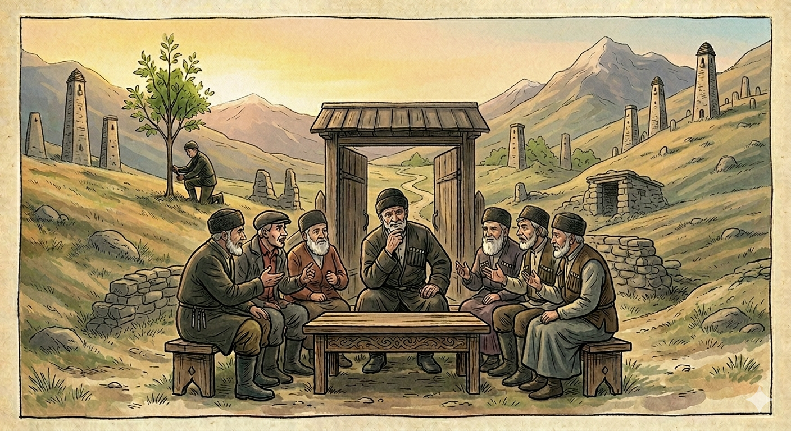

И.А. Дахкильгов. Хьехаме дувцарш - поучительные рассказы-притчи.
И.А. Дахкильгов. Хьехаме дувцарш - поучительные рассказы-притчи. Из ингушского фольклора.

Кхы халагӀа фуд
Дар дайна ягӀача пхьегӀий тӀа дийцад фу хала хӀамаш да сага тӀакхоачаш, царна юкъе халагӀа дар а фуд. ДӀа хьа а дийцад. ЦӀенах цӀи яьлар, оалаш хиннад, къийвалар а оалаш хиннад, иштта кхыдола хӀамаш а дийцад. Дош отташ хиннадац. ПхьегӀий тӀа цхьа воккха саг ваьгӀав, корта а элла, йист а ца хулаш. - Яь-яь, къонах, укх дешах хьона фу хет? - аьннад цунга. - Сага тӀакхоачаш дукха да, - жоп деннад цо. - Боахамах цӀи а йоал, Далла ма доагӀалда, кхоаччара саг а бакъ долча дуне дӀаводаш а хул… Дукха да уж вайна тӀадужадаь а вай ловш а дола хала хӀамаш. Бакъда шоана, массарел халагӀадар шун ха безам бале, дӀаховлда шоана: массарел халагӀа а тоалургдоаца а хӀама да во а тиша а тӀехьа кхер. ПхьегӀий тӀа баьгӀараш берригаш раьза хилар цу дешашта.
РУССКИЙ
Что самое худшее
Как-то были люди на сельских посиделках и вели разговоры о разном. Речь зашла и о том, что на свете самое худшее из всего, что может постичь человека. Судили, рядили о многом. Кто-то самым худшим назвал пожар, кто-то сказал, что самое худшее - это обеднеть… Спор разгорелся вовсю. Лишь некий старик сидел и отмалчивался. - Эй ты! Почему ты молчишь? Скажи, что по-твоему есть самое худшее из всего того, что может постичь человека, - пристали к нему. - Отвечу, - сказал старик и продолжил, - сгорит дом - плохо, но его можно вновь построить; плохо обеднеть, но и это поправимо, и все это в человеческих руках. Однако самое худшее - это то, что человек не в силах исправить. Самое худшее, что может постичь человека, - это когда вырастет плохое потомство. Оно неисправимо, и это есть самое худшее.
ENGLISH
What's the worst thing?
One day, a group of people were gathered at a village get-together, chatting about all sorts of things. The conversation turned to what was the worst thing in the world that could befall a person. They weighed up and discussed many possibilities. Some said a fire was the worst; others said that the worst thing was to become poor… The debate flared up in earnest. Only one old man sat there in silence. 'Hey, you! Why are you keeping quiet? Tell us, what do you think is the worst thing that can happen to a person?' they pressed him. 'I'll answer,' said the old man, and continued, 'If a house burns down, that's bad, but it can be rebuilt; it's bad to become poor, but that too can be remedied, and all this is within human power. However, the worst thing is that which a person is powerless to remedy. The worst thing that can befall a person is to have bad offspring. It is irreparable, and that is the very worst.
НОХЧИЙН
ПОГОВОРКИ
Ахьа хӀама йоаца хьайра санна латт дезал боаца ков. Двор без семьи (большой), что мельница без зерна. A yard without a family is like a mill without grain. Доьзал боцу ков – ялта боцу хьайра ду.Бера етташ хилча, дог эш цун. Если бить ребенка, то он теряет чувство собственного достоинства. A beaten child loses its sense of dignity. Бер бетта хилча, дог эш цуьнан.Вай ца даьр дикача тӀехьено дергда; вай даьр воча тӀехьено дохоргда. Хорошее потомство продолжит начатое нами, а плохое его разрушит. Good offspring will continue what we began; bad offspring will tear it down. Тхо ца динарг дика т1аьхьено дийр ду, тхо динарг вон т1аьхьено дохор ду.Воча тӀехьенал вогӀа хӀама хила йиш яц. Ничто не может быть хуже плохого потомства. Nothing can be worse than bad offspring. Вон т1аьхьенал вон х1ума хила йиш яц.Дардайначо даьр дийцад, воча тӀехьено дай бийцаб. Бездельник прошлыми заслугами хвалился; никчемное потомство хвалилось предками. The idler bragged about deeds already done; worthless offspring bragged about their ancestors. Болх бецачо динарг дийцина, вон тӀаьхьено дай дийцина.Дикача коа дика жӀали хилар теннад, во тӀехье хучул. В хорошем дворе лучше иметь доброго пса, чем плохое потомство. In a good yard, it's better to have a good dog than bad offspring. Дика керта дика ж1але хилар тоьар ду, вон т1аьхье хиларал.Дикача сагах – дика тӀехьале. От хорошего человека – хорошее наследство. From a good man comes a good legacy. Дика стагах – дика т1аьхьале.Довнашка вувлача даь фу лоаца хиннад. У любителя вражды потомство немногочисленно. One prone to feuds has little offspring. Довнашка велла даьн т1аьхьале к1езиг хуьлу.Къаьнадар хоастаде, къонадар эца. Старое – похвали, молодое – купи. Praise the old, but buy the young. Къена дар хеста, къона дар эца.Массарел а хьалдолашагӀа ва дика тӀехье кхеяр. Самый богатый тот, кто вырастил хорошее потомство. The richest man of all is the one who raised good offspring. Дика т1аьхье кхиийнарг ву массарел хьалдолуш верг.Саг Ӏемав кхоанарча диканга сатувса. Человек привык надеяться на лучшее завтра (живет надеждами). A person is used to hoping for a better tomorrow. Стаг 1амийна ву кхана дика хургдолга сатуьйсуш.Хьалхаводар тӀехьавоагӀачун тӀий да. Впереди идущий – мост для идущего следом. The one walking ahead is a bridge for the one who follows. Хьалха водарг т1аьхьавогIучунна тӀий ду.Хьалхара чарх кхастарца тӀехьара чарх а кхаст. Как будет крутиться переднее колесо, так закрутится и заднее. As the front wheel turns, so the back wheel will turn too. Хьалхара чарх кхастарца, т1аьхьара чарх а кхаст.